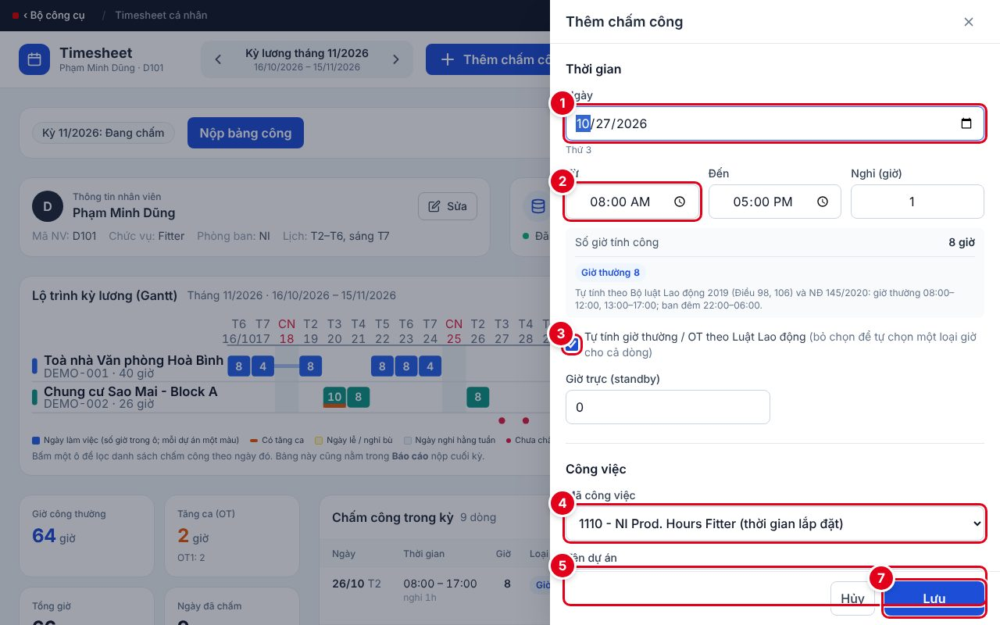
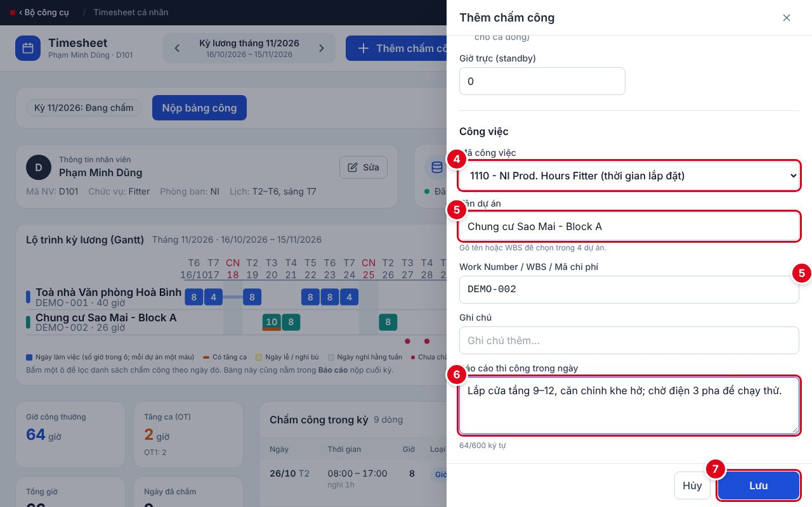
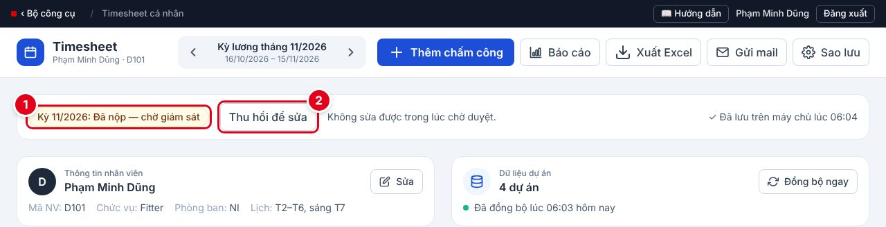
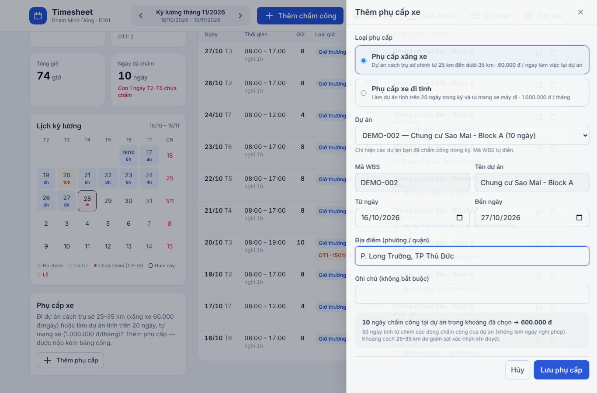
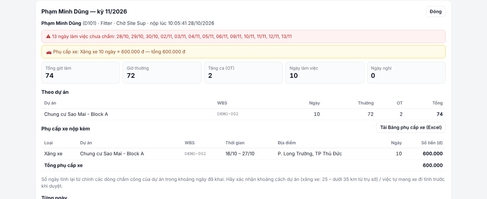
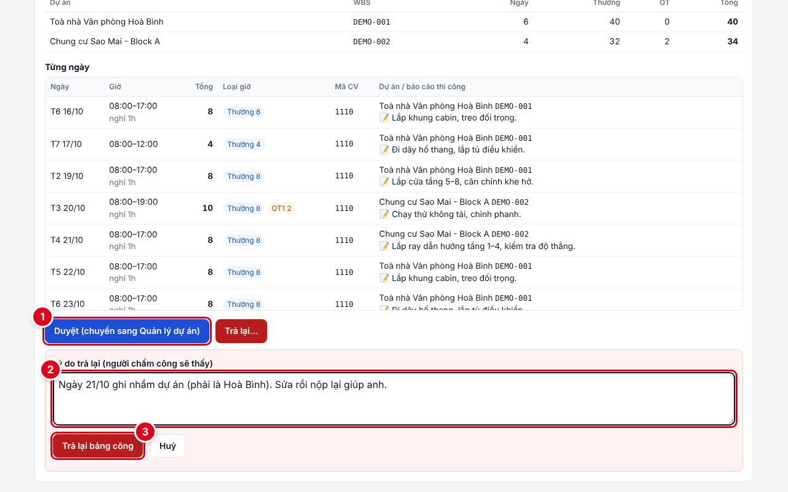

1Bức tranh toàn cảnh
Fitter chấm công và nộp → Giám sát duyệt cấp 1 → Quản lý dự án duyệt cấp 2 → giờ công tự vào Thống kê giờ công.
2Lịch một kỳ lương
Kỳ lương mang tên tháng kết thúc: kỳ 11/2026 = 16/10 → 15/11, hạn nộp 12/11. Ngày 13–15 chấm trước theo kế hoạch.
3Fitter: chấm công mỗi ngày
Trang chủ → Timesheet cá nhân → nút ＋. Khoảng 1 phút mỗi ngày; mất sóng vẫn chấm được, có mạng app tự gửi.


- Ngày — mặc định hôm nay.
- Từ – Đến – Nghỉ — giờ vào, giờ ra, giờ nghỉ.
- Tự tính giờ thường / OT — để nguyên dấu tick.
- Mã công việc — ví dụ 1110 cho giờ lắp đặt; nghỉ phép chọn mã nghỉ.
- Dự án — gõ vài chữ, chọn gợi ý; WBS tự điền. Làm 2 dự án/ngày → thêm 2 dòng.
- Báo cáo thi công — hôm nay làm gì, vướng gì.
- Lưu. Sửa ✏️ / xoá 🗑 ở cuối mỗi dòng trong danh sách.
4Fitter: nộp bảng công cuối kỳ
Lịch kỳ lương không còn ngày chấm đỏ → Nộp bảng công trước ngày 12.

- Đã nộp — chờ giám sát — bảng công khoá sửa trong lúc chờ duyệt.
- Thu hồi để sửa — nộp nhầm thì lấy về sửa (khi giám sát chưa duyệt).
Bị trả lại: lý do hiện ngay cạnh trạng thái (và có email) → sửa đúng dòng → nộp lại.
🚗 Phụ cấp xe — khai trước khi nộp, nộp kèm bảng công
| Loại | Khi nào được | Số tiền |
|---|---|---|
| Xăng xe | Dự án cách trụ sở chính từ 25 km đến dưới 35 km | 60.000 đ × số ngày làm tại dự án |
| Xe đi tỉnh | Làm dự án tỉnh trên 20 ngày trong kỳ và tự mang xe máy đi | 1.000.000 đ / tháng |
- Thẻ Phụ cấp xe (dưới Lịch kỳ lương) → Thêm phụ cấp.
- Chọn loại, chọn dự án (chỉ hiện dự án bạn đã chấm công trong kỳ — WBS tự điền), chỉnh từ ngày – đến ngày, ghi địa điểm → Lưu phụ cấp. Nhiều dự án thì thêm nhiều dòng.
- Số ngày tự tính từ các ngày đã chấm công ở dự án đó (không tính ngày nghỉ phép; một ngày chỉ tính xăng xe một lần).
- Bấm Nộp bảng công: bảng xác nhận hiện cả phụ cấp. Dòng có ⚠ (chưa đủ 20 ngày, chưa tick tự mang xe…) thì phải sửa / xoá mới nộp được.
- Gửi mail tự đính kèm thêm file Bảng phụ cấp xe (đúng mẫu Excel 2 sheet); cũng tải riêng được bằng Tải form phụ cấp (Excel).

5Các trạng thái của bảng công
6Giám sát: duyệt bảng công
Fitter nộp → bạn nhận email có nút mở thẳng bảng công. Mỗi tối 18:30 có email tổng hợp: chấm công trong ngày, bảng công chờ bạn duyệt, fitter chưa chấm công. Nên duyệt trong ngày.
| # | Kiểm tra trước khi Duyệt | Sai thì trả lại, ghi rõ |
|---|---|---|
| ① | Không thiếu ngày (dòng cảnh báo vàng) | “Thiếu ngày …” |
| ② | Đúng dự án / WBS nơi fitter làm thực tế | Ngày + dự án đúng |
| ③ | Giờ vào – ra, tăng ca hợp lý | Ngày + giờ đúng |
| ④ | Có báo cáo thi công (dòng 📝) | Nhắc bổ sung |
| ⑤ | Không có dòng tô đỏ | “Tải lại Timesheet rồi nộp lại” |
Phụ cấp xe nộp kèm (nếu có): bảng Phụ cấp xe nộp kèm trong trang chi tiết — số ngày tính lại từ chấm công. Bạn xác nhận khoảng cách 25 – dưới 35 km (xăng xe) / việc tự mang xe đi tỉnh rồi mới duyệt; sai thì trả lại kèm lý do. Nút Tải Bảng phụ cấp xe (Excel) cho file đúng mẫu để chuyển kế toán.


- Duyệt — đúng hết thì bấm.
- Trả lại… → ghi lý do (bắt buộc).
- Trả lại bảng công — fitter nhận email kèm lý do.
Sai, sửa lại.
Ngày 21/10 ghi nhầm dự án Sao Mai, đúng là Hoà Bình.
7Lỗi thường gặp
| Hiện tượng | Cách xử lý |
|---|---|
| Lịch còn ngày chấm đỏ | Bấm ngày đó trên lịch → chấm bù (nghỉ thì chấm mã nghỉ). |
| Báo “Mất mạng / Chưa gửi” | Không cần làm gì — có mạng app tự gửi. |
| Không sửa được | Đã nộp (bị khoá): Thu hồi để sửa nếu chưa duyệt, nếu đã duyệt thì báo giám sát. |
| Không tìm thấy dự án | Trang chủ → Đồng bộ ngay; vẫn không có thì báo quản trị viên. |
| Quá ngày 12 chưa nộp | Nộp ngay (app vẫn cho nộp) và báo giám sát. |
| Nút Nộp cho giám sát bị mờ, báo “Phụ cấp xe còn lỗi” | Sửa hoặc xoá dòng phụ cấp có ⚠ (chưa đủ 20 ngày đi tỉnh, chưa tick tự mang xe, không có ngày chấm công ở dự án…). |
| Không bấm được Thêm phụ cấp | Kỳ chưa có dòng chấm công nào — chấm công trước (số ngày phụ cấp tính từ chấm công). |
8Tập luyện bằng chế độ Demo
Trang chủ → chân trang 🧪 Chạy thử (Demo): dữ liệu mẫu riêng, không ảnh hưởng dữ liệu thật; email chỉ về hộp thư của bạn, tiêu đề [DEMO].
- Vai Fitter: chấm 1 ngày, lùi về kỳ trước → Nộp bảng công.
- Đổi vai trò → Site Sup: mở bảng công → Trả lại với lý do cụ thể.
- Vai Fitter: sửa → nộp lại. Vai Site Sup → Duyệt; vai Quản lý dự án → Duyệt lần 2. Xong bấm Thoát demo.
Hỏi nhanh cuối buổi: Kỳ 12/2026 từ ngày nào đến ngày nào, hạn nộp ngày nào? (16/11 → 15/12, hạn 12/12) · Mất sóng có chấm được không? (Được, app tự gửi) · Giám sát kiểm tra gì trước khi duyệt? (5 điểm ở phần 6)
9Thẻ nhớ — in và dán ở văn phòng công trường
👷 FITTER — Timesheet cá nhân
- Mỗi ngày: hết ca → ＋ Thêm chấm công.
- Điền 5 ô: Ngày · Giờ vào–ra–nghỉ · Mã công việc · Dự án · Báo cáo thi công → Lưu.
- Làm 2 dự án → 2 dòng. Nghỉ → chấm mã nghỉ.
- Mất sóng vẫn chấm — app tự gửi khi có mạng.
- Cuối kỳ: lịch không còn ngày đỏ → Nộp bảng công.
- Có phụ cấp xe → thẻ Phụ cấp xe → Thêm phụ cấp trước khi nộp (xăng xe 60K/ngày · xe đi tỉnh 1 triệu/tháng).
- Hạn nộp: ngày 12 (ngày 13–15 chấm trước theo kế hoạch).
- Nộp nhầm → Thu hồi để sửa. Bị trả lại → đọc lý do, sửa, nộp lại.
🦺 GIÁM SÁT — Duyệt bảng công
- Đọc email 18:30 mỗi ngày: chấm công trong ngày, bảng công chờ duyệt, ai chưa chấm.
- Có email “đã nộp” → bấm Mở bảng công để duyệt (hoặc nhãn đỏ N chờ duyệt ở trang chủ).
- Xem & duyệt → kiểm tra 5 điểm:
① đủ ngày ② đúng dự án ③ giờ & OT hợp lý ④ có báo cáo ⑤ không dòng đỏ. - Có phụ cấp xe nộp kèm → xác nhận khoảng cách 25–35 km / tự mang xe đi tỉnh; tải Bảng phụ cấp xe (Excel) cho kế toán.
- Đúng → Duyệt (chuyển Quản lý dự án).
- Sai → Trả lại + lý do: ngày nào – sai gì – sửa thành gì.
- Duyệt trong ngày, xong trước ngày 12–13.
- Tự chấm công của mình như Fitter.